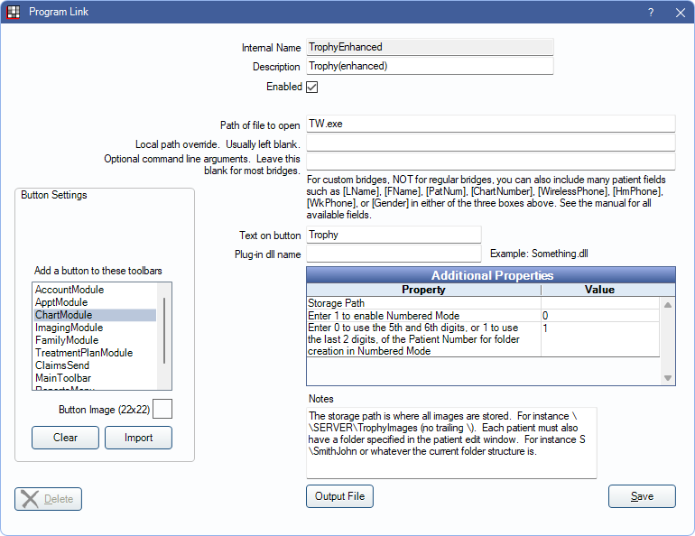

Trophy (Enhanced) Bridge
In the Main Menu, click Setup, Program Links. Double-click Trophy(enhanced).
After version 5.0, this is known as Kodak Dental Imaging (KDI). Also use this bridge for some Carestream products.
There are two different Trophy bridges available:
- Trophy Simple: Not recommended but may be used for new installations of Trophy. It always uses the patient ID (PatNum) as the image folder name.
- Trophy Enhanced: Recommended for new installations. Required for existing installations of Trophy. For existing installations, the user must type in the name of the folder in the Edit Patient Information window for each patient.
To enable the bridge:
- Check the Enabled box.
- Verify the Path of file to open.
- Double-click a row in Additional Properties to change settings.
- Storage Path: Enter the folder path where images are stored.
- Enter 1 to enable Numbered Mode
- Enter 0 to use the 5th and 6th digits, or 1 to use the last 2 digits, of the Patient Number for folder creation in Numbered Mode
- Set up a clickable bridge button.
- Under Add a button to these toolbars, highlight where to display the button.
- Enter the Text on button.
- (Optional) Import an image to show on the button (22 x 22 pixels).
- If using clinics, click Hide Button for Clinics. Select which clinics the button should display on.
- Click Save.
Technical Details
Storage Path: The storage path might look similar to
\\SERVER\tw
orF:\tw
The storage path must be set to exactly the same value as the database location within Trophy. The location for the database can be edited within the Trophy program. Trophy uses this database path when searching for patients.
Enhanced Bridge
If using Fona OrisWin imaging then the enhanced bridge is the correct bridge to use. If using the enhanced bridge, then each patient has a Trophy Folder path entered in the Patient Edit window. The folder name for one patient might look similar to
G.rvg\G0000001
or\\SERVER\tw\G.rvg\G0000001
The bridge makes the following assumptions:
- User has previously used the standalone mode of Trophy.
- The previous program created a text file inside each patient folder. The format of the text file is shown further down.
- The storage path contains a series of A to Z folders named like A.rvg, B.rvg, C.rvg, etc.
Automation capabilities of the bridge:
- Searches text files for matching LName, FName, Birthdate.
- If all three match, uses that folder.
- If birthday doesn't match, but there is exactly one match for LName and FName, then it uses that folder.
- Otherwise, lets user choose from existing list of folders.
- User can create folder for new patient, which automatically increments the max folder number by one.
- Open Dental does not create new text files. It only makes use of existing text files.
Example text file:
Name of file: FILEDATA.txt. Contents:
[Patient file]
NUMERO=W0000022
NOM=WALIA
PRENOM=KUNAL
DATE=19820411
SECU=...-..-....
CODE=.....-....
TEL1= (...)...-....
TEL2= (...)...-....
PHOTO=
EXTNUM=W0000022
Enhanced Bridge, Numbered Mode
Some installations of Trophy do not use FILEDATA.txt files, and the folders are numbered according to patient ID. The patient folders are grouped into subfolders with similar numbers. If the user has had a conversion from SoftDent to Open Dental, and if the patient ID numbers have been preserved, then many existing patients already have patient image folders named by their patient numbers.
Automation sequence:
- Searches all subfolders of main image folder, regardless of folder organization.
- If a folder name matches the patient ID, then it assigns that folder to the patient.
- If no folder is found, it creates a folder with the name of the patient ID. It puts it in a subfolder named by the last two digits. Example: 23/123
As an alternative to linking folders on the fly, we provide an image conversion service which links up the folders ahead of time.
Troubleshooting
If the bridge isn't working, troubleshoot it by creating a Windows shortcut. The location / target is the Trophy program itself. For example, C:\Program Files\Trophy\TW.exe. After creating the shortcut, right-click on it and select properties. Edit the target. Add a space after the original target and then -P, then no space, then the full path to a patient folder without any trailing \. Similar to this:
C:\Program Files\Trophy\TW.exe -PF:\tw\G.rvg\G0000001
Close the properties window. Then, click the shortcut to test. This simulates exactly what Open Dental is doing. If this doesn't work, then Open Dental won't work either. If it does work, change the settings in Open Dental to match.